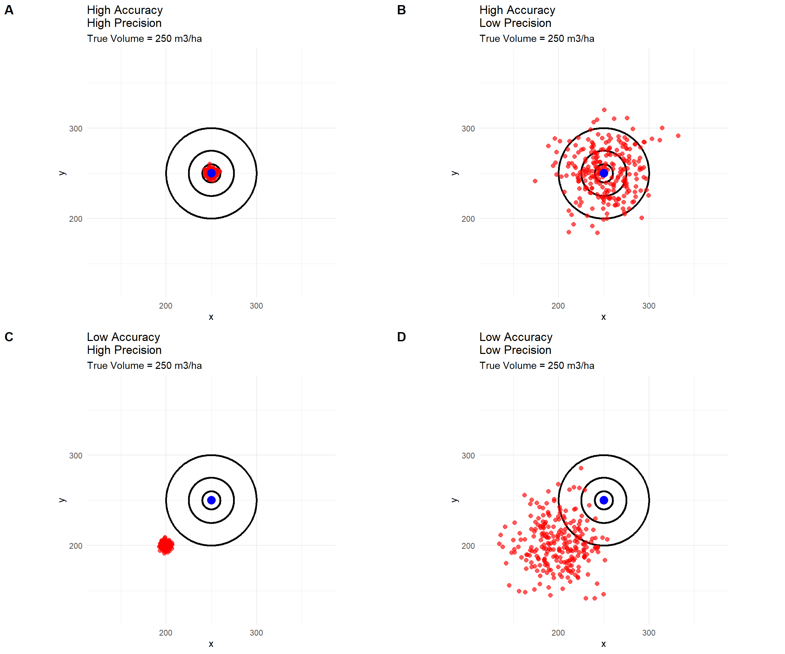
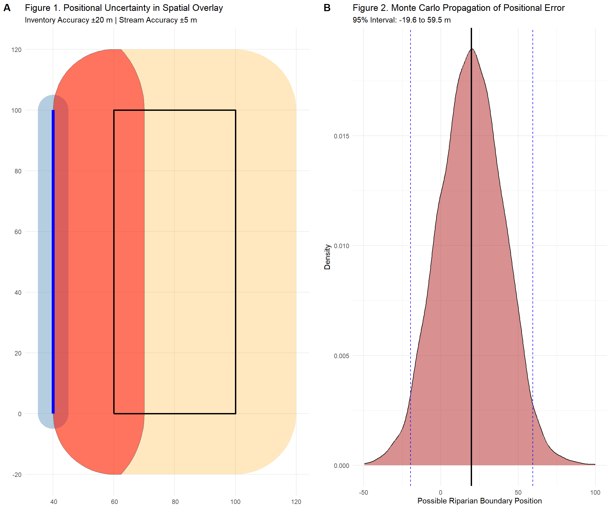
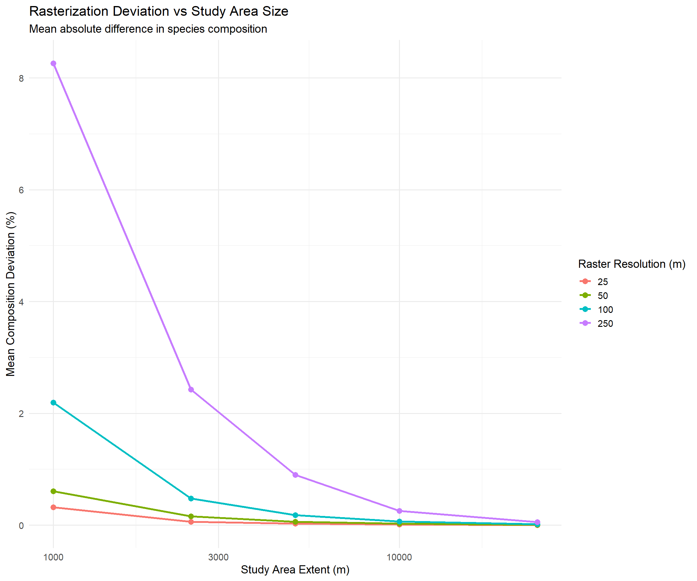
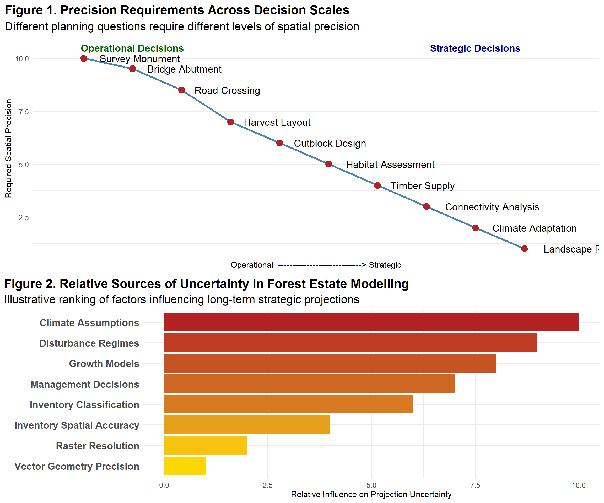

11 Spatial Data Accuracy and Precision in Strategic Modelling
11.1 Introduction
Strategic forest and landscape modelling depends fundamentally on spatial data. Yet one of the most persistent misconceptions in resource analysis is the assumption that highly detailed spatial representations automatically produce more accurate results. In practice, the relationship between accuracy and precision is far more nuanced, particularly when models are intended to support strategic and tactical decision-making rather than operational field implementation.
11.2 Precision and the grid
Precision refers to the level of detail, resolution, or consistency with which spatial features are represented. Accuracy, by contrast, refers to how closely the data reflects reality. A dataset can be highly precise but inaccurate, just as it can be relatively coarse yet reasonably accurate for its intended purpose. The classic dartboard analogy illustrates this distinction well: darts clustered tightly together demonstrate precision, but only darts clustered around the bullseye demonstrate accuracy.

This distinction is especially important in the context of Forest Estate Modelling, where standardized gridded data frameworks are used to support consistent province-wide analysis. Forest Analysis and Inventory Branch’s data management system employs gridded data at a 1 hectare spatial resolution. Some practitioners remain hesitant to use gridded or raster-based approaches because rasterization appears to reduce spatial precision when compared to vector polygons. However, reduced precision does not necessarily imply reduced accuracy, nor does increase precision guarantee improved decision-making.
The assumption that vector data is inherently superior often stems from the visual appearance of vector maps. Sharp polygon boundaries and highly detailed linework create the impression that the data closely represents reality. However, every map is ultimately an abstraction. Forest inventory polygons, roads, streams, and ecological boundaries are not direct representations of the landscape; they are interpretations derived from aerial and satellite imagery, field measurements, classification rules, and human judgment.
The limitations of source data are often overlooked. Vegetation Resource Inventory (VRI) linework, for example, may have positional accuracies on the order of ±20 metres and species classification accuracies of approximately 60 percent. There are numerous examples where perceived certainty exceeds actual data quality, including inventory linework, species classification errors, and polygon delineation challenges. Even the simple act of drawing a boundary between two forest types is often subjective, especially where ecological transitions are gradual rather than discrete.It important to remember that a line drawn with a 0.5 mm pencil on a 1:20,000 map effectively represents a feature approximately 10 metres wide, demonstrating that apparent precision can mask substantial uncertainty. This introduces the concept of false precision. False precision occurs when data are represented or reported at a level of detail unsupported by the accuracy of the underlying measurements.
11.3 The Weakest Link Principle in Spatial Analysis
One of the most important—and most frequently misunderstood—principles in spatial modelling is that the quality of an analytical result cannot exceed the quality of its least reliable input. In other words, when multiple spatial datasets are combined, the resulting product inherits the uncertainty, accuracy limitations, and precision constraints of the weakest dataset involved. This principle is directly analogous to significant figures in mathematics, where the precision of a calculation is constrained by the least precise measurement used to produce it. Spatial overlays cannot create precision that did not already exist in the source data.
Consider a simple example. Suppose a forest inventory polygon layer has a positional accuracy of ±20 m, while a stream network layer has a positional accuracy of ±5 m. When these layers are intersected to determine riparian management zones, the final product cannot realistically be considered accurate to ±5 m because one of its primary inputs may already be displaced by 20 m. The resulting analysis inherits the uncertainty of the forest inventory layer. Any map displaying boundaries to the nearest metre may appear highly precise, but it is conveying a level of certainty unsupported by the underlying data.

Figure A demonstrates that a highly accurate streamlayer (±5 m) intersected with a less accurate forest inventory boundary (±20 m) yields an overlay whose reliability cannot exceed that of the forest inventory.
Figure B demonstrates the same concept using MonteCarlo simulation. Thousands of realizations show that small stream errors contribute relatively little to the final uncertainty compared with the larger uncertainty in the inventory boundary. The resulting riparian boundary exhibits a broad range of plausible locations, illustrating how uncertainty propagates through spatial analysis and why final products inherit the limitations of their least accurate inputs.
This issue becomes even more pronounced when many layers are combined. Modern GIS systems can overlay dozens of datasets simultaneously: forest inventory, terrain models, roads, wildlife habitat, hydrology, fire history, climate surfaces, land ownership, and projected disturbances. The computational process can create an extraordinarily sophisticated output with millions of polygons, detailed statistics, and coordinates extending to several decimal places. However, the sophistication of the analytical engine does not improve the truthfulness of the inputs. It simply processes the uncertainty already embedded within them.
An important distinction must therefore be made between computational precision and data accuracy. Computers perform calculations with extraordinary numerical precision. A GIS can calculate an area to six decimal places or determine a coordinate to the nearest millimetre. Yet these outputs are often derived from data layers whose real-world uncertainty may be measured in tens of metres and whose attribute uncertainty may be much larger. This tendency is an abuse of decimal precision—a situation where analytical outputs imply a degree of certainty that does not actually exist.
The problem is compounded because uncertainty often propagates through analytical workflows. Every spatial layer contains both positional and attribute error. When layers are combined, these errors interact. A forest stand may be assigned the wrong leading species, a stream may be slightly misplaced, and a boundary may reflect an interpreter’s judgment rather than an objective field measurement. Individually, these errors may appear minor. Collectively, they can influence the outputs of suitability analyses, habitat assessments, timber supply forecasts, and landscape projections.
Importantly, the addition of more variables does not necessarily improve model accuracy. There is a common tendency to assume that a more complex model must be a better representation of reality. But adding more variables with substantial uncertainty may simply add more uncertainty to the modelling process. If explanatory variables already contain large measurement errors, increasing model complexity can create the illusion of realism without delivering a corresponding improvement in predictive capability. In some cases, the additional complexity merely disguises uncertainty behind a more sophisticated analytical framework.
This is particularly relevant in Forest Estate Modelling. Strategic models are not attempting to predict the exact location of a future harvest block fifty years from now (we are not in the prediction business). Rather, they are exploring broad patterns of timber supply, disturbance risk, habitat distribution, and landscape change. At these scales, uncertainties in inventory classification, growth projections, climate assumptions, and management decisions are often significantly larger than the uncertainties introduced by rasterizing data or simplifying geometries. Focusing excessively on geometric precision can therefore divert attention from more influential sources of uncertainty.
The raster-versus-vector debate illustrates this concept well. Many analysts and the lay audience instinctively prefer vector data because it visually appears more detailed and therefore more accurate. Yet if the traditional inventory boundaries (re: VRI) themselves contain positional uncertainty as well as classification uncertainty maintaining sub-metre vector precision does little to improve the validity of strategic projections. In fact, a raster representation may more honestly communicate the level of certainty that exists in the source information.
11.4 Fitness for Purpose
A fundamental principle of spatial analysis is that data quality should be evaluated relative to its intended use rather than against an absolute standard of precision. This concept, often referred to as fitness for purpose, recognizes that no spatial dataset is universally “good” or “bad.” Instead, its usefulness depends on whether its accuracy, precision, resolution, and uncertainty are appropriate for the decision being supported. Data suitable for engineering a road alignment may be inadequate for cadastral surveys, while the same dataset may be more than sufficient for strategic timber supply analysis. The key question is therefore not “How precise is the data?” but rather “Is the data sufficiently accurate and reliable for the purpose at hand?”
In Forest Estate Modelling, decisions are typically made at landscape, management-unit, or regional scales. Analysts are often interested in broad patterns such as future harvest flow, age-class distributions, habitat availability, wildfire risk, or cumulative effects. At these scales, many planning outcomes are driven by aggregate trends rather than the precise location of individual stand boundaries. Consequently, a gridded representation that accurately captures overall landscape composition may be entirely fit for purpose, even if it sacrifices some geometric detail. Requiring operational or survey-grade precision for strategic analyses may add complexity without materially improving the quality of the decisions being made.
Ultimately, fitness for purpose shifts the focus from maximizing detail to maximizing decision value. A useful spatial model is not one that represents every feature with the highest possible precision, but one that accurately captures the information necessary to support robust and defensible decisions. This perspective helps avoid the trap of false precision and encourages a more balanced evaluation of spatial data, where precision, accuracy, cost, processing requirements, and uncertainty are all considered in relation to the planning objective. By aligning data representation with decision scale, analysts can produce results that are both scientifically credible and operationally practical.
To evaluate how rasterization affects information content at different spatial resolutions, a Monte Carlo validation experiment was conducted using a vectorized synthetic forest inventory. Random sample locations were repeatedly compared against rasterized representations at resolutions of 25 m, 50 m, 100 m, and 250 m. Across 1,000 simulations, mean absolute error (MAE) increased from approximately 1.7 m³/ha at 25 m resolution to 16.7 m³/ha at 250 m resolution, while the coefficient of determination (R²) declined from approximately 0.96 to 0.64. However, bias remained near zero at all resolutions, indicating that rasterization did not systematically overestimate or underestimate stand volume.
| Monte Carlo Rasterization Validation | ||||||||
| Raster versus vector volume comparison | ||||||||
| Resolution (m) | Mean MAE | Median MAE | MAE 2.5% | MAE 97.5% | LEP (%) | RMSE | Bias | R squared |
|---|---|---|---|---|---|---|---|---|
| 25 | 1.72 | 0.00 | 0.85 | 2.78 | 2.00 | 15.02 | 0.02 | 0.96 |
| 50 | 3.44 | 0.00 | 2.24 | 4.74 | 4.00 | 21.46 | −0.05 | 0.92 |
| 100 | 6.82 | 0.00 | 5.16 | 8.83 | 7.88 | 30.37 | −0.02 | 0.84 |
| 250 | 16.34 | 0.00 | 13.76 | 19.04 | 18.86 | 47.42 | −0.36 | 0.64 |
Perhaps more revealing was the spatial distribution of error. Even at 250 m resolution, approximately 81% of sampled locations reproduced the original stand volume exactly, while only 19% exhibited any deviation. Furthermore, the median absolute error remained zero across all tested resolutions, indicating that rasterization errors were concentrated within a relatively small proportion of the landscape rather than being uniformly distributed. Most locations therefore retained their original inventory values despite substantial reductions in geometric precision.
From a fitness-for-purpose perspective, this suggests that modest reductions in geometric detail may be acceptable when the planning objective is to understand long-term landscape dynamics rather than predict the exact location of future operational activities.
11.4.1 Raster versus Vector Redux
Forest Estate Modelling is not concerned with predicting the exact location of a harvest block, road segment, or disturbance decades into the future. Instead, it seeks to understand broad patterns, trends, risks, and opportunities across large landscapes. In this context, the analytical value of sub-hectare precision is often overstated.
The raster-versus-vector debate provides an excellent example. Rasterization converts vector polygons into a gridded representation, which necessarily reduces geometric precision. Small polygons may be generalized or omitted, and boundaries become less exact. Nevertheless, studies comparing rasterized and vectorized inventories have repeatedly shown that many aggregate planning metrics—such as species composition, age-class distributions, and total area estimates—remain remarkably stable across a range of grid sizes. Analysis across multiple Timber Supply Areas found extremely strong relationships between raster and vector area estimates and demonstrated that aggregation substantially reduces apparent error. At strategic scales, differences introduced by rasterization were often insignificant compared with the uncertainties already present in the inventory data itself.
Furthermore, gridded approaches offer important practical advantages. Raster datasets eliminate many common vector-topology problems, including slivers, overlaps, gaps, and multipart polygon complications. Spatial overlays become computationally trivial, processing times are dramatically reduced, and model complexity can be managed more effectively. When planning exercises require thousands of scenarios runs or iterative analyses, reducing computational burden may provide greater analytical value than maintaining highly detailed geometries that contribute little additional insight.

This experiment was designed to test the hypothesis that rasterization error decreases as study area size increases because boundary effects become a progressively smaller proportion of the total landscape. Synthetic forest inventories were generated across five landscape extents ranging from 100 ha (1 km × 1 km) to 62,500 ha (25 km × 25 km). Each inventory was represented both as vector polygons and raster surfaces with cell sizes of 25 m, 50 m, 100 m, and 250 m. For each combination of extent and resolution, species composition was calculated and the mean absolute difference between the vector and raster representations was used as a measure of rasterization deviation. The experiment was replicated twenty times to account for variability in landscape configuration and species distribution.
The results strongly supported the hypothesis. For every raster resolution, composition deviation declined rapidly as study area size increased. At the smallest extent (100 ha), mean deviation ranged from 0.32% for a 25 m raster to 8.26% for a 250 m raster. In contrast, at the largest extent (62,500 ha), deviation fell to only 0.003%, 0.007%, 0.019%, and 0.055% for the 25 m, 50 m, 100 m, and 250 m rasters respectively. Even relatively coarse raster resolutions produced very small deviations once the analysis was conducted over a sufficiently large area. The standard deviations also decreased substantially with increasing extent, indicating that rasterization effects became both smaller and more consistent as landscape size increased. These findings suggest that rasterization error is dominated by edge and boundary effects, which become diluted as the proportion of interior area increases.
11.5 Path Dependency and the Illusion of Precision
Few analysts arrive at a preference for vector data through a rigorous examination of accuracy, uncertainty, or modelling performance. Rather, the preference often emerged through decades of accumulated institutional practices, software investments, training, workflows, and professional culture. Once an organization adopts a particular approach, every subsequent decision tends to reinforce that choice. In forestry, much of our inventory development evolved from air-photo interpretation, stand delineation, and polygon-based mapping. Forest inventory systems, GIS databases, operational planning tools, and analytical procedures were all built around polygon representations of the landscape. Over time, an entire ecosystem of software, expertise, and management processes developed around vector data.
This creates a classic path dependency problem. Because vector data has traditionally been used, analysts become accustomed to thinking in polygons. Because they think in polygons, new systems are designed around polygons. Because new systems are designed around polygons, future analysts continue to use polygons. The result is that the underlying assumption—that polygons are inherently superior representations of reality—often goes unquestioned.
11.5.1 Precision Becomes a Proxy for Quality
An interesting psychological effect emerges from this history. Detailed vector boundaries look authoritative. A stand polygon with dozens of vertices appears more sophisticated than a 100 m grid cell. The visual impression is that more detail must equal more knowledge. However, what analysts are often seeing is not increased accuracy but increased geometric complexity. A polygon boundary may be stored with sub-metre coordinate precision while representing a forest edge that was interpreted from aerial photography and known to have positional uncertainty of ±20 m. In this situation, the geometry appears precise while the underlying knowledge remains uncertain. The vector boundary creates an impression of certainty that the inventory itself cannot support.
Raster approaches challenge this assumption because they make the abstraction more visible. A grid cell openly admits that it is a generalized representation of reality. It does not pretend that ecological transitions are infinitely sharp or that stand boundaries can be located with perfect certainty. In many ways, the raster is more honest about what we actually know.
11.5.2 Institutional Investment Reinforces the Bias
Path dependency is also reinforced through investment.
Organizations may have:
- Decades of polygon inventories.
- Custom vector processing tools.
- Analysts trained in vector workflows.
- Regulatory processes built around polygons.
- Legacy planning models require vector inputs.
When significant investments have been made in a particular methodology, people naturally seek evidence that validates those investments. This does not occur because analysts are irrational; it is simply a normal organizational response. As a result, questions such as: “Does rasterization significantly affect strategic outcomes?” often become replaced by: “What information are we losing by not using vectors?”
The first question is scientific. The second is cultural.
11.5.3 Strategic Modelling Changes the Question
Path dependency becomes particularly problematic when operational thinking is transferred into strategic modelling. At the operational level, precise locations matter. Engineers building roads require highly detailed spatial information. Surveyors require exact coordinates. Harvest boundaries eventually need to be laid out on the ground.
Strategic models, however, answer fundamentally different questions:
- What is the expected long-term timber supply?
- How connected is habitat across a landscape?
- What is the risk of disturbance?
- How resilient is the forest under alternative futures?
These are aggregate, landscape-scale questions. Experience suggests that when analyses are aggregated into age classes, species groups, planning units, connectivity networks, or timber supply projections, the effects of rasterization often become trivial relative to the much larger uncertainties already present in inventory classification, yield projections, climate assumptions, and future management decisions. Yet because analysts have historically worked with polygons, there is often an instinctive belief that maintaining polygon geometry must improve the result, even when the modelling objective does not depend on that level of detail.
11.5.4 The False Equivalence Between Detail and Insight
Perhaps the most important implication of path dependency is that it can cause organizations to confuse detail with insight. There is a common notion that increasing complexity automatically increases realism. More vertices, more polygons, more variables, and more detailed geometry may make a model appear more sophisticated, but they do not necessarily improve predictive capability. In some cases, they merely increase processing time and analytical effort without materially affecting outcomes.
This is analogous to reporting a timber volume estimate as: 12,364,718.437 m³ instead of:12.4 million m³
The first appears more scientific, but if the underlying uncertainty is ±10%, the additional digits contribute no meaningful information. They create an illusion of certainty. Likewise, maintaining a polygon boundary to sub-metre precision contributes little if the inventory linework may be displaced by ±20 m and species attribution may only be correct 60% of the time.
11.5.5 A More Useful Perspective
Rather than asking whether raster or vector is “better,” strategic modelling should ask: Which representation is most appropriate given the decision scale, data uncertainty, and management question? Once viewed this way, rasterization becomes less a loss of precision and more an acknowledgement of existing uncertainty. Indeed, one could argue that gridded representations help break path dependency by forcing analysts to think in terms of patterns, probabilities, and landscape dynamics instead of exact boundaries that may never have existed on the ground in the first place.
The real challenge is not choosing between raster and vector. The challenge is recognizing when our preference for precision is driven by analytical necessity and when it is simply the inertia of decades of established practice. In many strategic modelling contexts, the latter is often a far greater influence than most practitioners realize.
11.6 Scale and Uncertainty
Another critical consideration in spatial modelling is the concept of scale appropriateness. Spatial data should not be judged in isolation but rather in relation to the decisions it is intended to support. The level of precision required to locate a bridge abutment, road crossing, or harvest boundary is fundamentally different from the level of precision required to evaluate long-term timber supply, habitat connectivity, wildfire resilience, or cumulative effects across hundreds of thousands of hectares. Strategic analyses are concerned with broad trends, patterns, and system behaviours rather than exact future locations. Consequently, the question is not whether data are as precise as possible, but whether they are sufficiently accurate and appropriately scaled to inform the decision being made. A common mistake in resource analysis is to apply operational standards of spatial precision to strategic questions, even though the underlying management objectives are entirely different.
At strategic scales, some of the largest sources of uncertainty are often unrelated to spatial representation altogether. Future climate conditions, wildfire occurrence, market behaviour, policy changes, growth responses, natural disturbances, and human decision-making frequently exert a far greater influence on projected outcomes than whether a stand boundary is represented as a polygon or a grid cell. In this context, expending significant effort to preserve operational-scale precision may provide little improvement in predictive capability while obscuring more consequential uncertainties. Effective strategic modelling therefore requires a shift in perspective: from asking how precisely we can represent the landscape to asking whether the representation is adequate for understanding future landscape dynamics. The objective is not to eliminate uncertainty—which is impossible—but to ensure that analytical effort is focused on the uncertainties that matter most to decision-making. In many cases, acknowledging the limits of what is known produces more robust and defensible strategic insights than pursuing ever greater levels of spatial detail.

Relative Sources of Uncertainty in Strategic Forest Modelling. Illustrative comparison of the relative influence of major uncertainty sources affecting long-term strategic forecasts. While raster resolution and geometric precision contribute some uncertainty, they are often substantially less influential than climate assumptions, growth responses, disturbance regimes, inventory quality, and future management decisions.
Effective strategic modelling requires acknowledging that uncertainty is unavoidable. The goal is not to eliminate uncertainty but to understand, quantify, and communicate it appropriately. Analysts should focus less on creating ever more detailed spatial representations and more on understanding the limitations of their data, the assumptions embedded within their models, and the sensitivity of outcomes to those assumptions.
As D.H. Lawrence observed, “The map appears to us more real than the land.” This caution is particularly relevant in modern spatial analysis. Precision is valuable only when it serves the decision context. Strategic models succeed not because they represent every detail of reality, but because they represent reality sufficiently well to support informed decisions. Recognizing the distinction between accuracy and precision helps analysts and planners avoid the trap of false certainty and fosters a more honest, transparent, and effective approach to landscape-level decision-making.
11.7 Summary
Ultimately, uncertainty is not something that can be eliminated through geoprocessing, larger databases, or more powerful computers. It is an inherent property of observing and representing complex natural systems. The role of modelling is not to remove uncertainty but to manage it, quantify it where possible, and ensure that decision-makers understand its implications.
A useful way to think about this is that technology can process uncertainty, but it cannot magically convert uncertain observations into certain knowledge. No matter how sophisticated the spatial analysis becomes, a model remains constrained by the quality of the data, assumptions, and interpretations that feed it. Recognizing this limitation encourages humility in modelling and helps analysts focus on what truly matters: producing results that are accurate enough for the decision being made, rather than merely more precise in appearance.